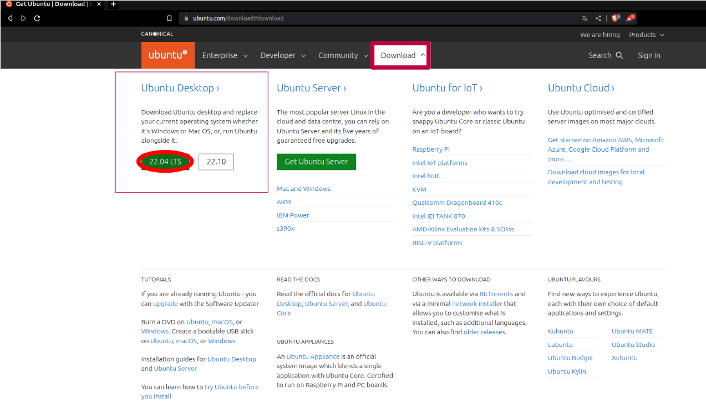
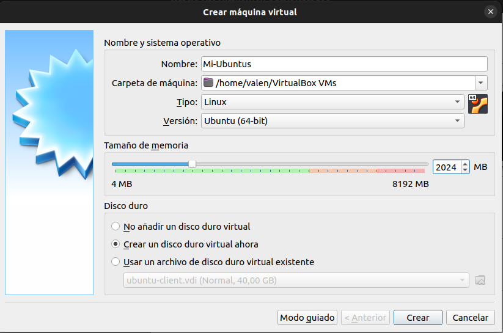

Como instalar Linux
Para ambos casos necesitaremos la iso del sistema operativo que vallamos a instalar, la iso es un tipo de archivo que se utiliza para almacenar una copia exacta de un sistema de ficheros de una unidad óptica. En nuestro caso tendremos que instalar la iso de ubuntus que la podremos encontrar fácilmente en la propia página web de ubuntus. A diferencia de windows, ubuntus y todos los "sabores" de sistemas linux son siempre gratuitos para el público.
Por ahora solo tengo pensado explicar detalladamente desde virtualbox, también diré como hacerlo en una máquina real pero solo me limitaré a explicarlo con mis palabras, quizás en un futuro lo haga igual de detallado que con virtualbox . Lo primero que vamos hacer es crear la máquina asignándole el nombre, la capacidad de almacenamiento y la memoria RAM que queramos que tenga nuestro sistema operativo. Ubuntus puede funcionar con 348 MB de ram pero recomiendo que mejor le pongais más de 1 giga para que funcione mejor. Debemos tener cuidado con la cantidad de memoria RAM que le asignamos a la máquina porque nuestro propio sistema operativo también necesita un mínimo para poder funcionar. En el caso de que le asignemos demasiada RAM nos petaría el ordenador.
Yo le voy a poner 2 GB que ya va bien con eso, si os dais cuenta cuando ponemos el nombre del sistema operativo, virtualbox reconoce automáticamente el tipo de sistema que queremos instalar. Luego nos pide el tamaño del disco duro que queramos asignarle. Podemos reservar el tamaño de memoria dinámicamente o fijo, dinámicamente es cuando el disco no coge directamente todos los gigas que le has puesto sino que toma una parte de la memoria y cuando vallamos guardando más datos va ir cogiendo más espacio del disco a partir de un máximo que le hallamos puesto, de esta manera la máquina no te quita todos los gigas de golpe sin embargo este proceso va ralentizar el funcionamiento de la máquina porque constantemente va estar recalculando el espacio en memoria que tiene que coger. Si lo reservamos como fijo la máquina coge directamente todos los gigas que le hallamos asignado, esto le da más rapidez a la hora de almacenar y extraer datos.

Para instalar linux solo tendríamos que darle todo a siguiente hasta que nos pregunte por nuestro nombre de usuario y por la contraseña, lo demás sería esperar hasta que se termine de instalarse. Esto solo se puede hacer en este caso, porque tenemos hecha una máquina virtual dedicada solo para linux, en caso de que lo hagamos en una máquina real donde tenemos instalado windows deberíamos hacerlo más prudentes porque podríamos cargarnos windows en la instalación y perderíamos todos los datos que tuvieramos almacenados.

Para instalar linux en una máquina real debemos tener primero un usb booteado con la iso del sistema operativo. Os recomiendo utilizar Rufus que es con el que yo he usado siempre y nunca me ha dado problemas. Luego deberíamos tocar la configuración de la BIOS para que al arrancar el ordenador primero lo haga desde el usb. Una vez hecho esto arrancamos y elegimos la primera opción que nos sale para la instalación. Después tendrémos que elegir el idioma que queramos para el sistema, en nuestro caso español. Luego nos pide la distribución de teclado, también escogemos el Español. Luego nos pedirá donde se queremos hacer la instalación, si tenemos windows instalado, linux lo reconocerá y nos saldrá una opción adicional que nos diga "Instalar linux junto a Windows" podemos darle a ese y el sistema se instalará por defecto en la partición libre que le hallamos asignado. También podemos escoger la última opción que nos permitiría crear nuestra propia tabla de particiones donde nosotros mismos podremos organizar la tabla de particiones, lo ideal sería tener una partición reservada solo para los datos y otra para la instalación del sistema operativo. Así si tubieramos que cambiar de sistema operativo podríamos hacerlo sobre esa misma partición sin tener que perder los datos.